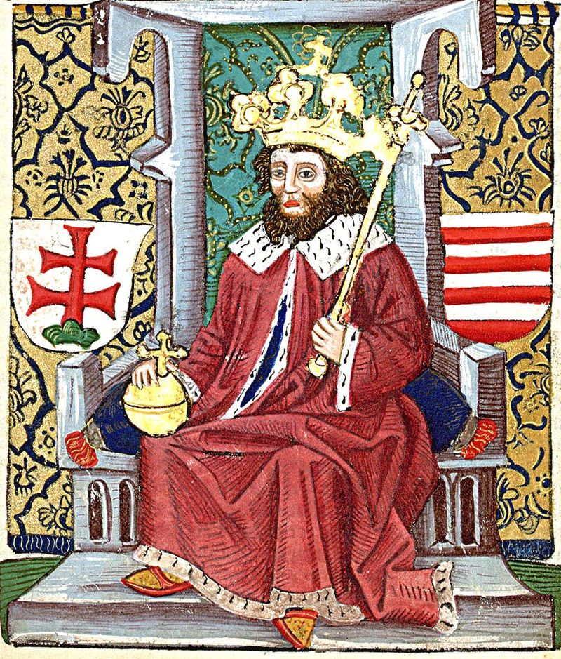
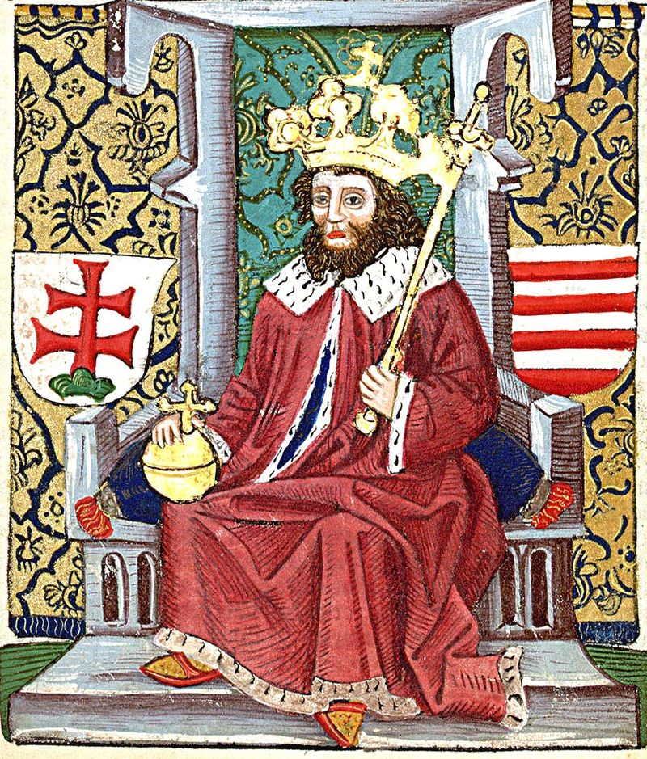

Királyok a XI. században
I.(Szent) István
Fejedelemként
Vajknak, aki megkeresztelésekor az István nevet kapta, a fejedelmi trónra való igénye az egyenes ági trónöröklés meghonosítását jelentette, ami a régi hagyományokkal való szakítás egyik jele volt. Még koronázása előtt leverte egyik rokona, Koppány lázadását, aki saját magának követelte a trónt és sokak támogatását élvezte, akik a régi, pogány szokásokat vagy a bizánci kereszténységet részesítették volna előnyben. (Az ősi szokásokat nem volt könnyű visszaszorítani, a 11. század során több pogánylázadás jelezte ezek erejét. A legnagyobbak 1046-ban és 1061-ben voltak.)
Királyként
A fejedelmet (valószínűleg) 1000 karácsonyán vagy 1001. január 1-jén koronázták királlyá. Kisajátította a lázadók birtokait, megszervezte a vármegyerendszert és a várispánságokat, stabil pénzt veretett, meghonosította az oklevélkiadást, német mintára törvénykönyvet íratott, melynek rendelkezéseit szigorúan betartatta, és mindent megtett azért, hogy az ország szokásai egyre jobban hasonlítsanak a nyugati keresztény királyságokéra.A megerősödött birodalmat fiára, Imrére kívánta hagyni, ő azonban 1031-ben, még apja életében elhunyt. Ezért unokaöccsét, Orseolo Pétert jelölte ki utódának. Ebbe bele nem nyugvó rokonát, Vazult megvakíttatta és fiaival (Leventével, Andrással és Bélával) száműzte az országból.
Orseolo (Velencei) Péter és Aba Sámuel
István 1038-ban meghalt, és a Magyarországon 1026 óta tartózkodó Péter került a trónra. Támogatottsága hamar lecsökkent és 1041-ben a nádor, Aba Sámuel vette át tőle a királyi címet. Az elűzött király a német-római császárhoz menekült és hűségesküt tett neki. A császár segítségével megnyert ménfői csata után 1044-ben ismét ő lett Magyarország királya. Az országos elégedetlenség azonban tovább nőtt. 1046-ban újabb lázadás robbant ki, ennek lett áldozata Gellért csanádi püspök is. A lázadó Vata és társai visszahívták az országba az elűzött Vazul fiait, akiktől a régi rend (mindenekelőtt a szabad parasztság helyzetének) visszaállítását remélték.
I.András
Csalódniuk kellett, az új uralkodó, I. András (Endre) – miután a lázadás erejét igénybe vette – első dolga annak leverése volt. Öccsét, Bélát hercegként az ország egy részének urává tette, Nyitra központtal. Az így kialakult dukátus (hercegség) intézményét később Könyves Kálmán szüntette meg.
I.Béla és Salamon
Amikor Andrásnak később megszületett fia, Salamon, a király a trónöröklés tervezett rendjét felborítva a herceggel szemben részére szerette volna biztosítani a trónt. Ez kemény összecsapásokhoz vezetett a két párt között, már András halála előtt is; előbb Béla (1060-1063) majd Salamon (1063-1074) jutott trónra. Erre a korra esik a második nagy pogánylázadás, amelyet Vata fia János vezetett.
I.Géza
Bár Béla halála után fiai, Géza, László és Lampert elfogadták Salamont uralkodónak, de 1074-ben, a mogyoródi csata után átvették az uralmat, Gézát téve meg királynak. Rövid, 3 éves uralkodása után I. (Szent) László került trónra. Salamon még egy darabig küzdött a hatalomért, majd 1080-ban behódolt. Egy újabb lázadása után (1085-ben apósa, Kuten kun király megtámadta Magyarországot, azonban kénytelen volt elmenekülni. 1087 táján halt meg.
I.(Szent) László
László kedvező időpontban került hatalomra, mert IV. Henrik német-római császár épp VII. Gergely pápával harcolt, így nem volt ideje és energiája a magyarokra. Bár László a pápa mellé állt, nem ismerte el a Szentszék hűbérúri státuszát. Rugalmas külpolitikát folytatva később megegyezett a császárral.
1091-ben meghódította és birodalmához csatolta Horvátországot, bár közben a Bizánc támogatásával Magyarországot ismét megtámadó kunokat is le kellett győznie.Szigorította I. István törvényeit, különösen a lopást büntette keményen: 10 dénár feletti érték eltulajdonítása halálbüntetést vont maga után. Megerősítette az egyház helyzetét, megtiltva a pogány áldozásokat és kötelezővé téve a templomba járást, büntetést írva elő a törvény megszegőinek. 1083-ban szentté avattatta I. Istvánt, Gellért püspököt és Imre herceget.
Könyves Kálmán
Szent László utódára, Kálmánra erős államot hagyott. Az eredetileg papnak készülő király enyhített elődje törvényein és megpróbálta megállítani a királyi birtokok csökkenését. Törvényben mondta ki a fiúági örökösödést és hogy azon családok birtokai, ahol nincs fiúutód, sem fiútestvér, visszaszállnak a királyra. A kereszteseket átengedte ugyan az országon, de a fegyelmezetlen csapatokat fegyverrel verte szét. Megalapította a nyitrai püspökséget és a pápához közeledve elismerte a nyugati keresztény egyház reformtörekvéseit (papi nőtelenség, invesztitúrajog, egyházi házasság). Befejezte Horvátország és Dalmácia meghódítását.
 
